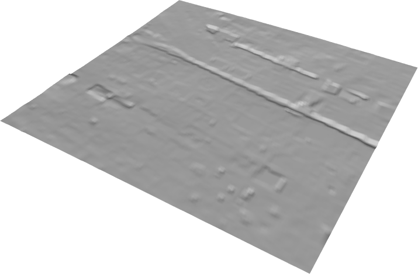
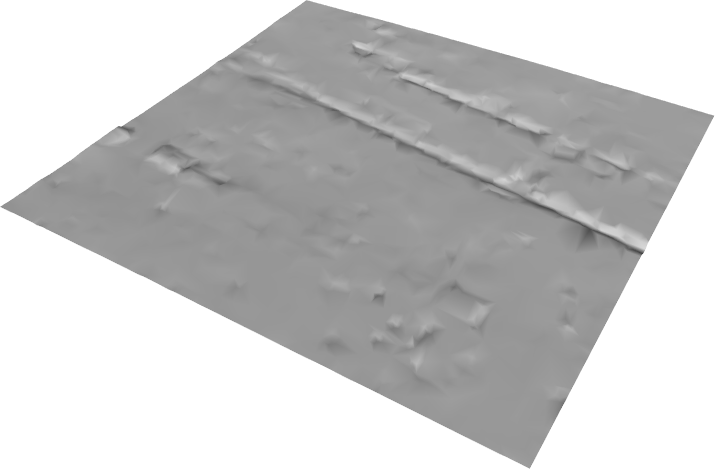
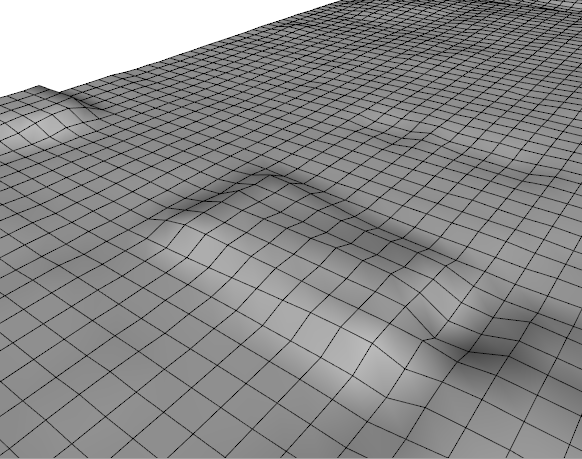
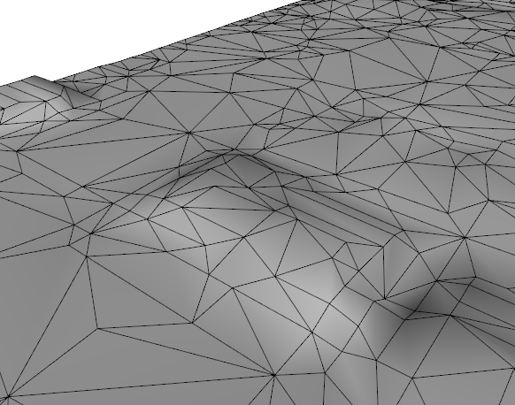

reduceGeometry operation
tolerance float Controls the number of vertices which are going to be removed from the geometry. Valid values are in the range [0,1]. For instance, a value of 0.2 will reduce the vertex count of the geometry by 20%.
The reduceGeometry operation simplifies the geometry by applying a series of edge collapses.
This operation changes the appearance of the model. The algorithm tries to reduce the complexity of the mesh by introducing the least possible delta to the appearance of the existing model.
Related
Examples
Reducing a Terrain


The picture above shows a shaded terrain mesh. Left: the original (16384 vertices, 16129 faces). Right: after reduceGeometry(0.8) (3276 vertices, 5066 faces).


Close-up of the terrain meshes from the previous picture. Left original, right reduced.